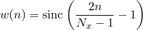
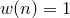
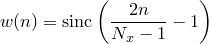
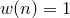
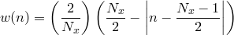
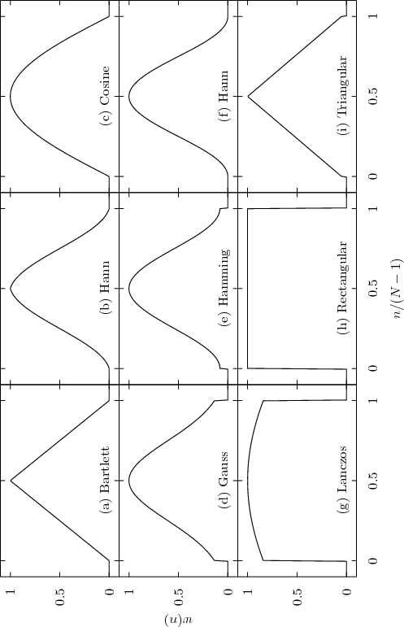
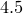

histogram [<range>] <function name>"()" '<datafile>'
[every <expression> {:<expression>} ]
[index <value>]
[select <expression>]
[using <expression> {:<expression>} ]
( [binwidth <value>] [binorigin <value>] |
[bins (x1, x2, ...)] )
The histogram command takes a single column of data from a file and produces a function that represents the frequency distribution of the supplied data values. The output function consists of a series of discrete intervals which we term bins. Within each interval the output function has a constant value, determined such that the area under each interval – i.e. the integral of the function over each interval – is equal to the number of datapoints found within that interval. The following simple example
histogram f() 'input.dat'
produces a frequency distribution of the data values found in the first column of the file input.dat, which it stores in the function  . The value of this function at any given point is equal to the number of items in the bin at that point, divided by the width of the bins used. If the input datapoints are not dimensionless then the output frequency distribution adopts appropriate units, thus a histogram of data with units of length has units of one over length.
. The value of this function at any given point is equal to the number of items in the bin at that point, divided by the width of the bins used. If the input datapoints are not dimensionless then the output frequency distribution adopts appropriate units, thus a histogram of data with units of length has units of one over length.
The number and arrangement of bins used by the histogram command can be controlled by means of various modifiers. The binwidth modifier sets the width of the bins used. The binorigin modifier controls where their boundaries lie; the histogram command selects a system of bins which, if extended to infinity in both directions, would put a bin boundary at the value specified in the binorigin modifier. Thus, if binorigin 0.1 were specified, together with a bin width of 20, bin boundaries might lie at  , , , and so on. Alternatively global defaults for the bin width and the bin origin can be specified using the set binwidth and set binorigin commands respectively. The example
, , , and so on. Alternatively global defaults for the bin width and the bin origin can be specified using the set binwidth and set binorigin commands respectively. The example
histogram h() 'input.dat' binorigin 0.5 binwidth 2
would bin data into bins between  and , between and , and so forth.
Alternatively the set of bins to be used can be controlled more precisely using the bins modifier, which allows an arbitrary set of bins to be specified. The example
histogram g() 'input.dat' bins (1, 2, 4)
would bin the data into two bins,  and .
A range can be supplied immediately following the histogram command, using the same syntax as in the plot and fit commands; if such a range is supplied, only points that fall within that range will be binned. In the same way as in the plot command, the index, every, using and select modifiers can be used to specify which subsets of a datafile should be used.
Two points about the histogram command are worthy of note. First, although histograms are similar to bar charts, they are not the same. A bar chart conventionally has the height of each bar equal to the number of points that it represents, whereas a histogram is a continuous function in which the area underneath each interval is equal to the number of points within it. Thus, to produce a bar chart using the histogram command, the end result should be multiplied by the bin width used.
Second, if the function produced by the histogram command is plotted using the plot command, samples are automatically taken not at evenly spaced intervals along the ordinate axis, but at the centres of each bin. If the boxes plot style is used, the box boundaries are be conveniently drawn to coincide with the bins into which the data were sorted.